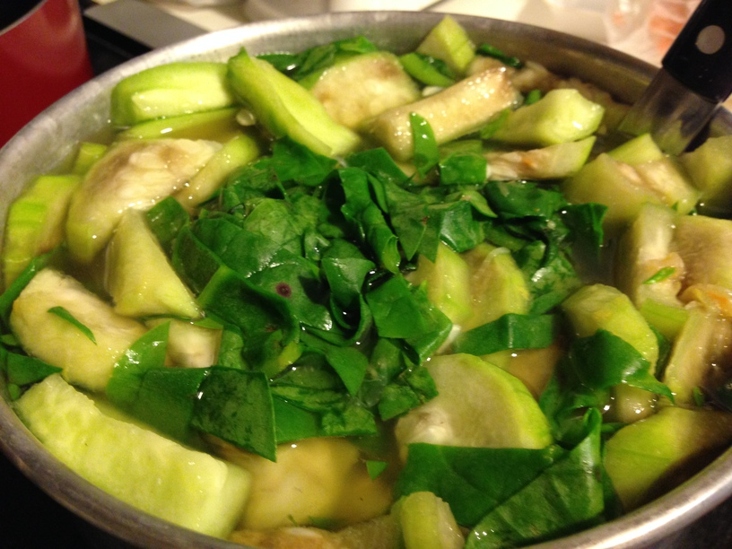

| Other | Meat | Veggie | Fruit |
|---|---|---|---|
| pepper | dried shrimp | malabar spinach | |
| salt | shallot | ||
| wonton soup base | taiwanese okra |
| instructions |
|---|
| Soak fried shrimp in hot water and mash fried shrimp |
| Stir fry taiwanese okra (luffa) & shallots with salt & pepper |
| Add bowl of fried shrimp & additional water |
| Add wonton soup base |
| Add malabar spinach prior to boiling |
| Adjust to taste as necessary |
| Canh spoils easily, so refridgerate when cool |